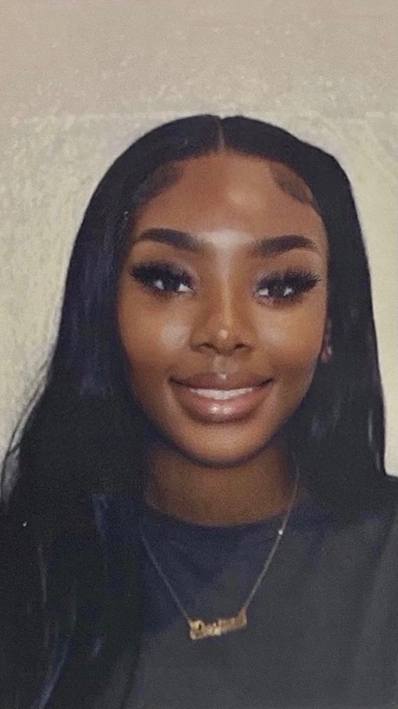

Music Album-Inspired Covers
A series of album cover designs inspired by different artists and music genres. These projects focused on typography, color, composition, and visual storytelling using Adobe Photoshop.
Student Portfolio
Hi, I'm Desirae Torrence, a Digital Media student at the University of Central Florida. I create work in graphic design, branding, content creation, social media, and digital storytelling.

I'm Desirae Torrence, a Digital Media student at the University of Central Florida with a passion for graphic design, branding, content creation, and digital storytelling. I enjoy creating designs that are both visually engaging and meaningful.
Through coursework, internships, and personal projects, I continue developing my skills in Adobe Creative Cloud, branding, social media, and visual communication while preparing for a career in the creative industry.
• I enjoy creating social media content and graphic designs.
• Fashion and beauty are two of my biggest creative interests.
• My favorite Adobe programs are Photoshop and Illustrator.
• I love learning new creative skills and challenging myself with new projects.
These projects highlight my creativity, design skills, and experience using Adobe Creative Cloud to create visual content for both class assignments and real-world organizations.
A series of album cover designs inspired by different artists and music genres. These projects focused on typography, color, composition, and visual storytelling using Adobe Photoshop.
A movie poster inspired by my own life and personality. This project combined photography, typography, layout, and storytelling to create a promotional-style poster.
Branded graphics, promotional flyers, Instagram posts, and digital content created for internships, organizations, and social media campaigns.
I continue building my creative and technical skills through coursework, internships, and personal projects.
Interested in my work or collaborating on a creative project? I'd love to connect!